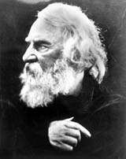

Turn,
turn, my wheel! Turn round and round
Without a pause, without a sound:
So spins the flying world away!
This clay, well mixed with marl and sand,
Follows the motion of my hand;
For some must follow, and some command,
Though all are made of clay!
Thus sang the Potter at his task
Beneath the blossoming hawthorn-tree,
While o'er his features, like a mask,
The quilted sunshine and leaf-shade
Moved, as the boughs above him swayed,
And clothed him, till he seemed to be
A figure woven in tapestry,
So sumptuously was he arrayed
In that magnificent attire
Of sable tissue flaked with fire.
Like a magician he appeared,
A conjurer without book or beard;
And while he plied his magic art--
For it was magical to me--
I stood in silence and apart,
And wondered more and more to see
That shapeless, lifeless mass of clay
Rise up to meet the master's hand,
And now contract and now expand,
And even his slightest touch obey;
While ever in a thoughtful mood
He sang his ditty, and at times
Whistled a tune between the rhymes,
As a melodious interlude.
Turn, turn, my wheel! All things must change
To something new, to something strange;
Nothing that is can pause or stay;
The moon will wax, the moon will wane,
The mist and cloud will turn to rain,
The rain to mist and cloud again,
To-morrow be to-day.
Thus still the Potter sang, and still,
By some unconscious act of will,
The melody and even the words
Were intermingled with my thought
As bits of colored thread are caught
And woven into nests of birds.
And thus to regions far remote,
Beyond the ocean's vast expanse,
This wizard in the motley coat
Transported me on wings of song,
And by the northern shores of France
Bore me with restless speed along.
What land is this that seems to be
A mingling of the land and sea?
This land of sluices, dikes, and dunes?
This water-net, that tessellates
The landscape? this unending maze
Of gardens, through whose latticed gates
The imprisoned pinks and tulips gaze;
Where in long summer afternoons
The sunshine, softened by the haze,
Comes streaming down as through a screen;
Where over fields and pastures green
The painted ships float high in air,
And over all and everywhere
The sails of windmills sink and soar
Like wings of sea-gulls on the shore?
What land is this? Yon pretty town
Is Delft, with all its wares displayed;
The pride, the market-place, the crown
And centre of the Potter's trade.
See! every house and room is bright
With glimmers of reflected light
From plates that on the dresser shine;
Flagons to foam with Flemish beer,
Or sparkle with the Rhenish wine,
And pilgrim flasks with fleurs-de-lis,
And ships upon a rolling sea,
And tankards pewter topped, and queer
With comic mask and musketeer!
Each hospitable chimney smiles
A welcome from its painted tiles;
The parlor walls, the chamber floors,
The stairways and the corridors,
The borders of the garden walks,
Are beautiful with fadeless flowers,
That never droop in winds or showers,
And never wither on their stalks.
Turn, turn, my wheel! All life is brief;
What now is bud wilt soon be leaf,
What now is leaf will soon decay;
The wind blows east, the wind blows west;
The blue eyes in the robin's nest
Will soon have wings and beak and breast,
And flutter and fly away.
Now southward through the air I glide,
The song my only pursuivant,
And see across the landscape wide
The blue Charente, upon whose tide
The belfries and the spires of Saintes
Ripple and rock from side to side,
As, when an earthquake rends its walls,
A crumbling city reels and falls.
Who is it in the suburbs here,
This Potter, working with such cheer,
In this mean house, this mean attire,
His manly features bronzed with fire,
Whose figulines and rustic wares
Scarce find him bread from day to day?
This madman, as the people say,
Who breaks his tables and his chairs
To feed his furnace fires, nor cares
Who goes unfed if they are fed,
Nor who may live if they are dead?
This alchemist with hollow cheeks
And sunken, searching eyes, who seeks,
By mingled earths and ores combined
With potency of fire, to find
Some new enamel, hard and bright,
His dream, his passion, his delight?
O Palissy! within thy breast
Burned the hot fever of unrest;
Thine was the prophets vision, thine
The exultation, the divine
Insanity of noble minds,
That never falters nor abates,
But labors and endures and waits,
Till all that it foresees it finds,
Or what it cannot find creates!
Turn, turn, my wheel! This earthen jar
A touch can make, a touch can mar;
And shall it to the Potter say,
What makest thou. Thou hast no hand?
As men who think to understand
A world by their Creator planned,
Who wiser is than they.
Still guided by the dreamy song,
As in a trance I float along
Above the Pyrenean chain,
Above the fields and farms of Spain,
Above the bright Majorcan isle,
That lends its softened name to art,--
A spot, a dot upon the chart,
Whose little towns, red-roofed with tile,
Are ruby-lustred with the light
Of blazing furnaces by night,
And crowned by day with wreaths of smoke.
Then eastward, wafted in my flight
On my enchanter's magic cloak,
I sail across the Tyrrhene Sea
Into the land of Italy,
And o'er the windy Apennines,
Mantled and musical with pines.
The palaces, the princely halls,
The doors of houses and the walls
Of churches and of belfry towers,
Cloister and castle, street and mart,
Are garlanded and gay with flowers
That blossom in the fields of art.
Here Gubbio's workshops gleam and glow
With brilliant, iridescent dyes,
The dazzling whiteness of the snow,
The cobalt blue of summer skies;
And vase and scutcheon, cup and plate,
In perfect finish emulate
Faenza, Florence, Pesaro.
Forth from Urbino's gate there came
A youth with the angelic name
Of Raphael, in form and face
Himself angelic, and divine
In arts of color and design.
From him Francesco Xanto caught
Something of his transcendent grace,
And into fictile fabrics wrought
Suggestions of the master's thought.
Nor less Maestro Giorgio shines
With madre-perl and golden lines
Of arabesques, and interweaves
His birds and fruits and flowers and leaves
About some landscape, shaded brown,
With olive tints on rock and town.
Behold this cup within whose bowl,
Upon a ground of deepest blue
With yellow-lustred stars o'erlaid,
Colors of every tint and hue
Mingle in one harmonious whole!
With large blue eyes and steadfast gaze,
Her yellow hair in net and braid,
Necklace and ear-rings all ablaze
With golden lustre o'er the glaze,
A woman's portrait; on the scroll,
Cana, the Beautiful! A name
Forgotten save for such brief fame
As this memorial can bestow,--
A gift some lover long ago
Gave with his heart to this fair dame.
A nobler title to renown
Is thine, O pleasant Tuscan town,
Seated beside the Arno's stream;
For Lucca della Robbia there
Created forms so wondrous fair,
They made thy sovereignty supreme.
These choristers with lips of stone,
Whose music is not heard, but seen,
Still chant, as from their organ-screen,
Their Maker's praise; nor these alone,
But the more fragile forms of clay,
Hardly less beautiful than they,
These saints and angels that adorn
The walls of hospitals, and tell
The story of good deeds so well
That poverty seems less forlorn,
And life more like a holiday.
Here in this old neglected church,
That long eludes the traveller's search,
Lies the dead bishop on his tomb;
Earth upon earth he slumbering lies,
Life-like and death-like in the gloom;
Garlands of fruit and flowers in bloom
And foliage deck his resting place;
A shadow in the sightless eyes,
A pallor on the patient face,
Made perfect by the furnace heat;
All earthly passions and desires
Burnt out by purgatorial fires;
Seeming to say, "Our years are fleet,
And to the weary death is sweet."
But the most wonderful of all
The ornaments on tomb or wall
That grace the fair Ausonian shores
Are those the faithful earth restores,
Near some Apulian town concealed,
In vineyard or in harvest field,--
Vases and urns and bas-reliefs,
Memorials of forgotten griefs,
Or records of heroic deeds
Of demigods and mighty chiefs:
Figures that almost move and speak,
And, buried amid mould and weeds,
Still in their attitudes attest
The presence of the graceful Greek,--
Achilles in his armor dressed,
Alcides with the Cretan bull,
And Aphrodite with her boy,
Or lovely Helena of Troy,
Still living and still beautiful.
Turn, turn, my wheel! 'T is nature's plan
The child should grow into the man,
The man grow wrinkled, old, and gray;
In youth the heart exults and sings,
The pulses leap, the feet have wings;
In age the cricket chirps, and brings
The harvest home of day.
And now the winds that southward blow,
And cool the hot Sicilian isle,
Bear me away. I see below
The long line of the Libyan Nile,
Flooding and feeding the parched land
With annual ebb and overflow,
A fallen palm whose branches lie
Beneath the Abyssinian sky,
Whose roots are in Egyptian sands,
On either bank huge water-wheels,
Belted with jars and dripping weeds,
Send forth their melancholy moans,
As if, in their gray mantles hid,
Dead anchorites of the Thebaid
Knelt on the shore and told their beads,
Beating their breasts with loud appeals
And penitential tears and groans.
This city, walled and thickly set
With glittering mosque and minaret,
Is Cairo, in whose gay bazaars
The dreaming traveller first inhales
The perfume of Arabian gales,
And sees the fabulous earthen jars,
Huge as were those wherein the maid
Morgiana found the Forty Thieves
Concealed in midnight ambuscade;
And seeing, more than half believes
The fascinating tales that run
Through all the Thousand Nights and One,
Told by the fair Scheherezade.
More strange and wonderful than these
Are the Egyptian deities,
Ammonn, and Emeth, and the grand
Osiris, holding in his hand
The lotus; Isis, crowned and veiled;
The sacred Ibis, and the Sphinx;
Bracelets with blue enamelled links;
The Scarabee in emerald mailed,
Or spreading wide his funeral wings;
Lamps that perchance their night-watch kept
O'er Cleopatra while she slept,--
All plundered from the tombs of kings.
Turn, turn, my wheel! The human race,
Of every tongue, of every place,
Caucasian, Coptic, or Malay,
All that inhabit this great earth,
Whatever be their rank or worth,
Are kindred and allied by birth,
And made of the same clay.
O'er desert sands, o'er gulf and bay,
O'er Ganges and o'er Himalay,
Bird-like I fly, and flying sing,
To flowery kingdoms of Cathay,
And bird-like poise on balanced wing
Above the town of King-te-tching,
A burning town, or seeming so,--
Three thousand furnaces that glow
Incessantly, and fill the air
With smoke uprising, gyre on gyre
And painted by the lurid glare,
Of jets and flashes of red fire.
As leaves that in the autumn fall,
Spotted and veined with various hues,
Are swept along the avenues,
And lie in heaps by hedge and wall,
So from this grove of chimneys whirled
To all the markets of the world,
These porcelain leaves are wafted on,--
Light yellow leaves with spots and stains
Of violet and of crimson dye,
Or tender azure of a sky
Just washed by gentle April rains,
And beautiful with celadon.
Nor less the coarser household wares,--
The willow pattern, that we knew
In childhood, with its bridge of blue
Leading to unknown thoroughfares;
The solitary man who stares
At the white river flowing through
Its arches, the fantastic trees
And wild perspective of the view;
And intermingled among these
The tiles that in our nurseries
Filled us with wonder and delight,
Or haunted us in dreams at night.
And yonder by Nankin, behold!
The Tower of Porcelain, strange and old,
Uplifting to the astonished skies
Its ninefold painted balconies,
With balustrades of twining leaves,
And roofs of tile, beneath whose eaves
Hang porcelain bells that all the time
Ring with a soft, melodious chime;
While the whole fabric is ablaze
With varied tints, all fused in one
Great mass of color, like a maze
Of flowers illumined by the sun.
Turn, turn, my wheel! What is begun
At daybreak must at dark be done,
To-morrow will be another day;
To-morrow the hot furnace flame
Will search the heart and try the frame,
And stamp with honor or with shame
These vessels made of clay.
Cradled and rocked in Eastern seas,
The islands of the Japanese
Beneath me lie; o'er lake and plain
The stork, the heron, and the crane
Through the clear realms of azure drift,
And on the hillside I can see
The villages of Imari,
Whose thronged and flaming workshops lift
Their twisted columns of smoke on high,
Cloud cloisters that in ruins lie,
With sunshine streaming through each rift,
And broken arches of blue sky.
All the bright flowers that fill the land,
Ripple of waves on rock or sand,
The snow on Fusiyama's cone,
The midnight heaven so thickly sown
With constellations of bright stars,
The leaves that rustle, the reeds that make
A whisper by each stream and lake,
The saffron dawn, the sunset red,
Are painted on these lovely jars;
Again the skylark sings, again
The stork, the heron, and the crane
Float through the azure overhead,
The counterfeit and counterpart
Of Nature reproduced in Art.
Art is the child of Nature; yes,
Her darling child, in whom we trace
The features of the mother's face,
Her aspect and her attitude,
All her majestic loveliness
Chastened and softened and subdued
Into a more attractive grace,
And with a human sense imbued.
He is the greatest artist, then,
Whether of pencil or of pen,
Who follows Nature. Never man,
As artist or as artisan,
Pursuing his own fantasies,
Can touch the human heart, or please,
Or satisfy our nobler needs,
As he who sets his willing feet
In Nature's footprints, light and fleet,
And follows fearless where she leads.
Thus mused I on that morn in May,
Wrapped in my visions like the Seer,
Whose eyes behold not what is near,
But only what is far away,
When, suddenly sounding peal on peal,
The church-bell from the neighboring town
Proclaimed the welcome hour of noon.
The Potter heard, and stopped his wheel,
His apron on the grass threw down,
Whistled his quiet little tune,
Not overloud nor overlong,
And ended thus his simple song:
Stop, stop, my wheel! Too soon, too soon
The noon will be the afternoon,
Too soon to-day be yesterday;
Behind us in our path we cast
The broken potsherds of the past,
And all are ground to dust a last,
And trodden into clay!
More Articles